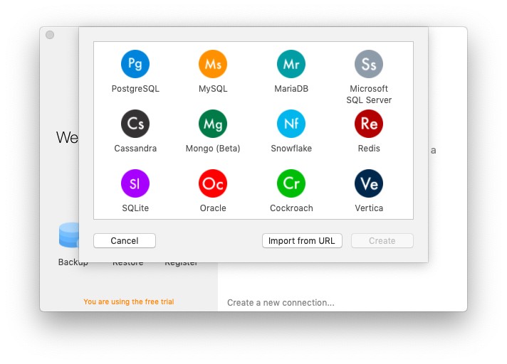
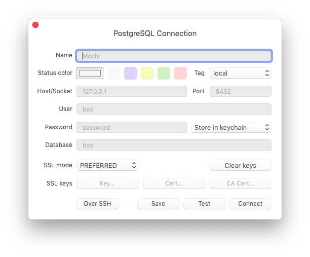
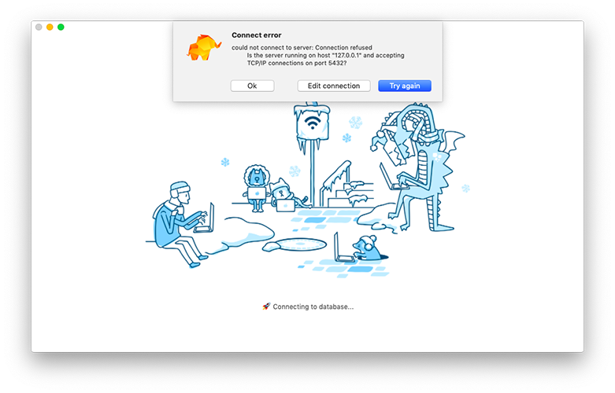
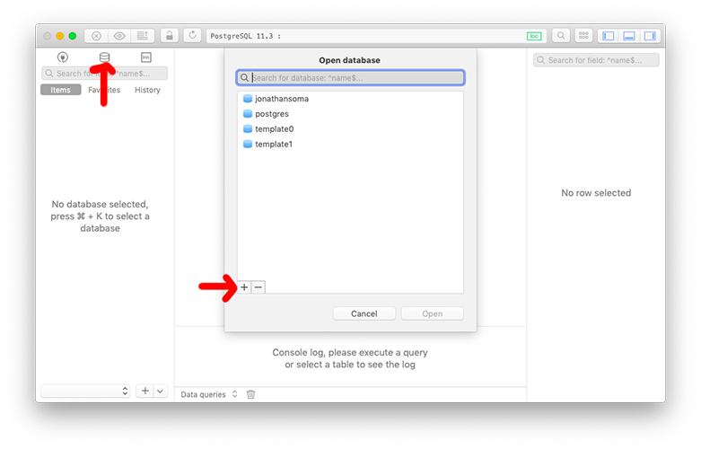
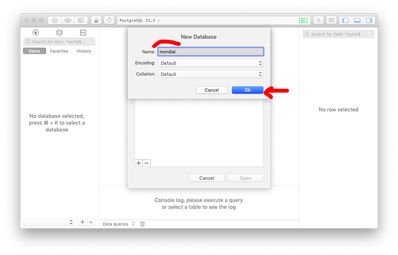
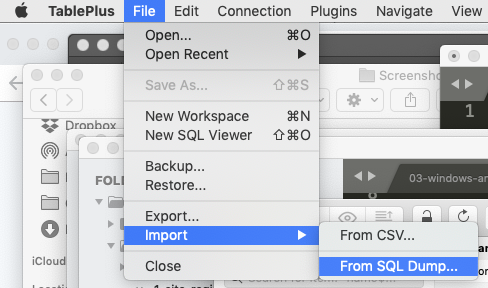
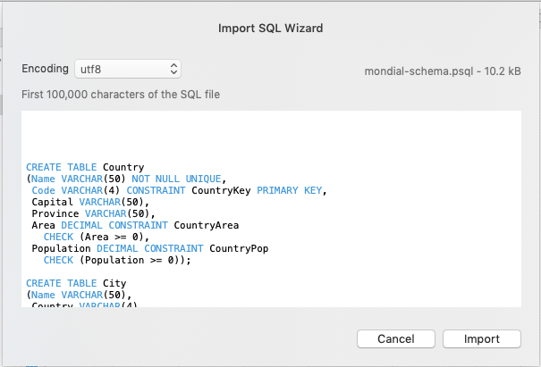
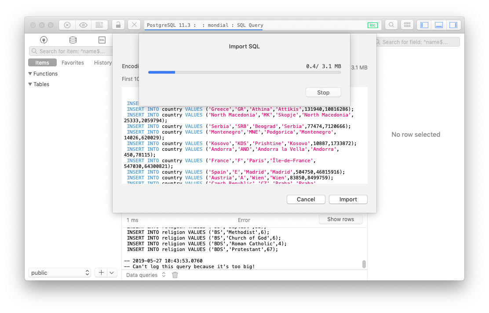
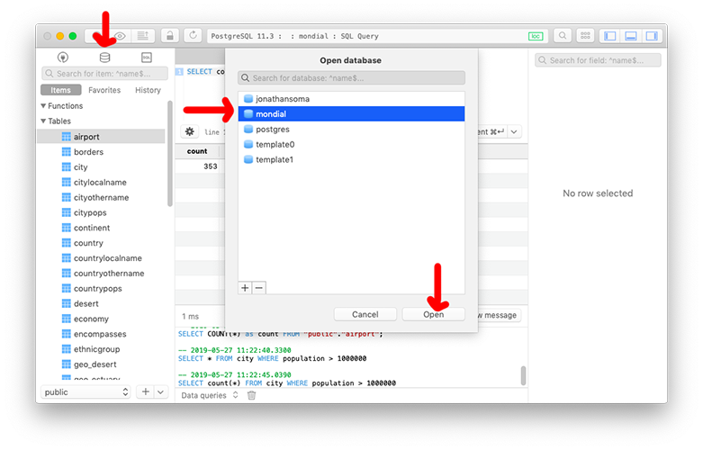
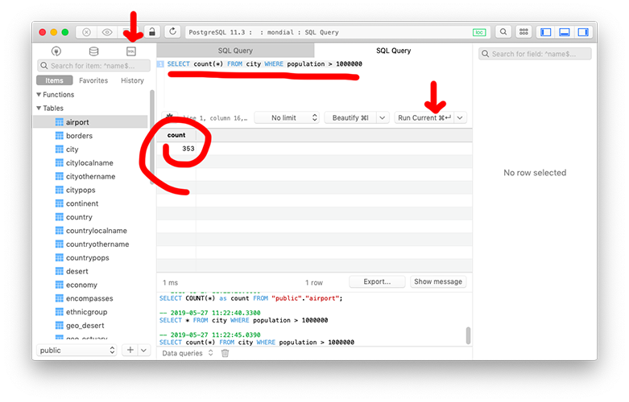

Using TablePlus to create and query Postgres databases
You should be able to do all of your important with psql, but just in case you have weird issues - character encoding is a big one - you can use TablePlus (you downloaded this as prep already).
Connecting TablePlus to your Postgres server
Open up TablePlus and follow the instructions to create a new connection (right click + New > Connection).
We want a PostgreSQL connection.

All of the defaults should be ok, although type in a password if you set one (on Windows it forces you to set one! Maybe you used your computer password?).

If you get an error like the one below, it’s because your server isn’t running. If you’re on a mac, make sure you’ve opened Postgres.app.

Creating a new database using TablePlus
Once you’re connected, you can create a new table by clicking the database button, then the +.

Give your database a name, and click OK to finish.

Importing SQL to a new databse using TablePlus
You probably want to do this with a newly created database (see previous step).
To import a SQL file, select File > Import > From SQL Dump. Technically this isn’t a SQL dump, its just a bunch of SQL commands, but I’m not going to complain!

Select the .sql file you’re interested in, click OK, and click OK again to run the import.

For the mondial data, you’ll import the schema file first, and the import second.
The data will import, fill up your new database, and you’ll be all set!

Running SQL queries against a Postgres database in TablePlus
Pick your database by clicking the little database icon, selecting your database, and clicking OK.

After you’ve picked your database, click the little SQL box, type in your query, and click Run Current. The result will show up below.
